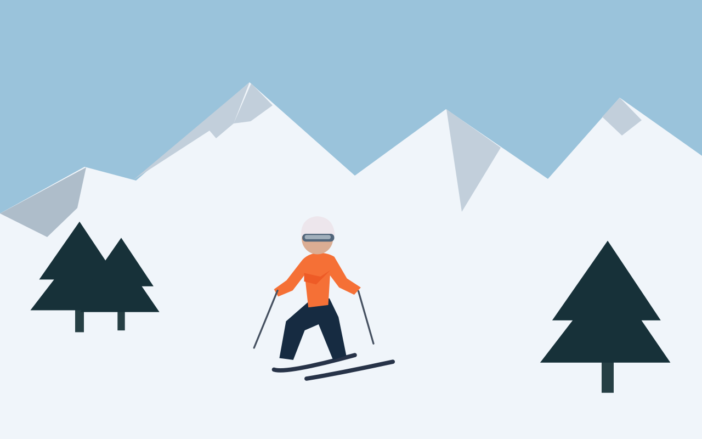
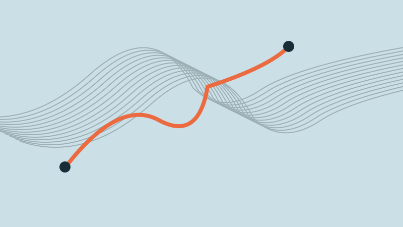

مقدماتی · نیمروز
از اولین پیچ
آشنایی با تجهیزات، ایستادن و اولین مسیر آبی در گروه کوچک.

از اولین حرکت تا پیدا کردن ریتم روی برف، در یک گروه کوچک تمرین میکنیم. وقت برگشت، قصهٔ هر ردّ تازه را کنار هم میشنویم.

مسیر یال شمالیآشنایی با مسیرهای باشگاه
آشنایی با تجهیزات، ایستادن و اولین مسیر آبی در گروه کوچک.
دو صبح در دامنه همراه مربی، برای تمرین تعادل و انتخاب مسیر.
حرکت گروهی در آغاز روشنایی و برگشت از مسیر مشخص باشگاه.
مسیر آشنایی با شیب ملایم و فضای کافی برای اولین پیچها.
مسیر تمرین ریتم و کنترل سرعت برای اسکیبازان باتجربهتر.
مسیر گروهی با همراهی مربی و توقفهای کوتاه برای مرور مسیر.
دوره و سطح تجربهات را در فایل درخواست بنویس.
 انتخاب این قالب
انتخاب این قالب